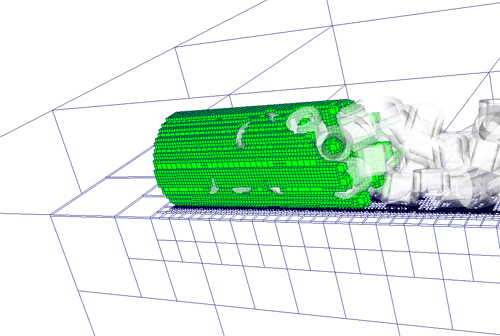

Motivation for the TreElm Library
Mesh-based algorithms build one of the most important discretization schemes for the numerical modeling of field problems. They are also well suited for parallel computations, as the meshes can be partitioned and the smaller problems solved concurrently. Their basic idea is the discretization of the computational domain by covering it fully with smaller, well defined elements. For complex geometries, it is in general necessary to use an unstructured mesh to discretize the computational domain. In unstructured meshes each element has typically a different size and form. Therefore, all information of element geometry and neighbor relations have to be described explicitly. This fully explicit description however, poses a severe hurdle for parallel processing, as potentially any part of the mesh might be required in the neighborhood of any process. Due to the limited memory, providing the complete mesh information locally to each partition is not an option, as the ability to process larger meshes is often the motivation to switch from one to many computing units in the first place. Although, it is possible to move this limitation out of the solver itself, Tu et al. pointed out the importance to avoid such bottlenecks throughout the complete chain of tools in the simulation. Thus, not only the main computational loop, but the entire simulation process has to be considered, including mesh generation and post-processing. The usage of hierarchical subdivisions in a fixed space resulting in and octree representation offers an option to overcome the hurdle for parallel processing of complex geometries with mesh-based methods.
TreElM provides a basis for massively parallel mesh-based simulations, using an octree discretization in combination with a space-filling curve. The usage of octree meshes for flow simulations has long been proposed, for example by Flaherty et al. in 1997. By using octree meshes the main bottleneck of unstructured meshes is avoided, while the flexibility of local refinement and resolution of arbitrary complex geometries is maintained. With the known topology of the octree, the needed information about other partitions can be kept at a minimum and the connectivity can be computed locally. Direct usage of cubic octree elements has the advantage that they can be computed efficiently in most schemes, or are even required as for example in the lattice Boltzmann method. 
The figure above shows an example for meshes, that are obtained by the octree discretization. It shows the filling of a channel with many small cylindric obstacles, indicated by transparent objects. The complete space covered by the octree is outlined by the blue grid lines and shows the refinement towards the channel with obstacles. Inside the channel, there is the actual computational domain, shown by the green cubical elements.
The basic concept in TreElM is to exploit the known hierarchical topology, provided by the octree. Another concept that is supported by the octree and beneficial for the parallel operation is the strictly elementwise view on the mesh data. As each element will be uniquely associated with a certain partition during the computation, such a view enables the parallel treatment straight from reading or creating the mesh onwards. TreElM therefore maintains an elemental view on the mesh data in the data layout and the operations on the data.
The Simulation Tool Chain
The tools in the framework range from the mesh generator Seeder
over a finite volume solver for compressible and a
lattice Boltzmann solver for incompressible flow to the post-processing tool
Harvester, that produces visualization files from simulation data
attached to the mesh.
This interaction is sketched in the following Figure.

Since neither input nor output (I/O) can be avoided to the largest part, even with an integrated workflow, data structures are designed to be suitable for efficient parallel reading and writing.
See Also
- The distributed Octree
- "Node identification in the tree" in tem_topology_module
- Data Concept
- Treelm File Format
- Implementation in the APES Framework
- Canonical Shapes
- Requirements
- Coding Guidelines